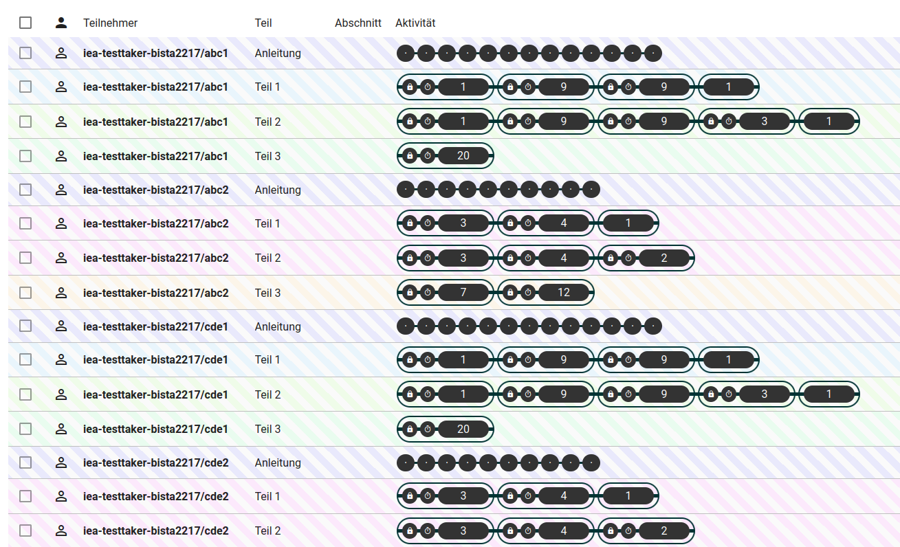

Gruppenmonitor
Der Gruppenmonitor wird auch manchmal als Testleitungskonsole bezeichnet.
Die Zugangsdaten der Testpersonen sind Gruppen zugeordnet. Der Testleitung steht ein spezielles Instrument zur Verfügung eine Gruppe während der Testdurchführung zu beobachten und die Teilnehmer ggf. im Test zu navigieren. Dieses Instrument trägt die Bezeichnung: Gruppenmonitor. Der Gruppenmonitor ist ein Teil des Testcenters, es handelt sich hier also nicht um eine separate Anwendung.
Um den Gruppenmonitor nutzen zu können, muss dieser für die gewünschte Personengruppe angelegt werden. Zugangsdaten und die Zuweisung von Personen zu Gruppen werden in der XML zur Studien-Definition eingerichtet. Der Gruppenmonitor wird mit Hilfe eines speziellen Zugangs mit dem Modus: monitor-group in der zu steuernden Gruppe angelegt.
<Testtakers>
<Metadata>
<Description>Beispielhafte XML zur Studien-Definition</Description>
</Metadata>
<CustomTexts></CustomTexts>
<Group id="sample_group" label="Primary Sample Group">
<Login mode="run-hot-return" name="Testperson1" pw="jk87zt">
<Booklet>BOOKLET.SAMPLE-1</Booklet>
</Login>
<Login mode="run-hot-return" name="Testperson2" pw="ghbv5">
<Booklet>BOOKLET.SAMPLE-1</Booklet>
</Login>
<Login mode="run-hot-return" name="Testperson3" pw="hg54d">
<Booklet>BOOKLET.SAMPLE-1</Booklet>
</Login>
<Login mode="monitor-group" name="test-group-monitor" pw="er45tz"/>
</Group>
</Testtakers>Mehr Informationen zur XML zur Studien-Definition sind den Referenzen zu entnehmen.
Anmeldung
Um den Gruppenmonitor zu starten, meldet sich die Testleitung mit entsprechenden Zugangsdaten (hier im Beispiel: test-group-monitor und er45tz) am Testcenter an. Anschließend öffnet sich der Gruppenmonitor und zeigt eine Liste aller verfügbaren Testhefte und eine Schaltfläche um den Gruppenmonitor zu starten. Die entsprechende Schaltfläche ist zu finden unter der Bezeichnung: Test-Gruppen Überwachung.
Bedienung und Ansicht
Der Gruppenmonitor ist in zwei Teile aufgeteilt, einen mittleren und einen linken Teil. Im linken Teil erfolgt die Testnavigation. Im mittleren Teil sind Informationen zu den Testpersonen, zum Fortschritt der Testung und weitere Informationen zu finden. Würde die oben gezeigte XML zur Studien-Definition verwendet werden, würden hier Informationen zu den 3 Personen: Testperson1, Testperson2 und Testperson3 zu finden sein. Außerdem ist der Verbindungsstatus ersichtlich und es können Einstellungen bzgl. der Ansicht vorgenommen werden.
Der Gruppenmonitor bietet verschiedene Ansichtsoptionen. Alle nachfolgenden Bilder werden mit den folgenden Ansichtsoptionen dargestellt: Spalten: Teil und Abschnitt Aktivität: Nur Abschnitte. Wird diese Anleitung parallel zu einem geöffneten Gruppenmonitor verwendet, setzen Sie zuvor die Ansichtsoptionen entsprechend.
Beispielhafte Ansicht eines Gruppenmonitors:
Systeminformationen und Einstellungen (rechts)
Oben rechts ist in Form eines kleinen Symbols der Verbindungsstatus des Gruppenmonitors zu sehen. Bei einer fehlerfreien Verbindung sollte das Symbol grün sein und es sollte “LIVE” darin stehen.
Ebenfalls oben rechts ist eine Einstellungs-Schaltfläche zu sehen. Mit Hilfe dieser kann die Ansicht (mehr oder weniger Informationen anzeigen) für das mittlere Fenster, das Aktivitätsfenster, angepasst werden.
Aktivitätsfenster (Mitte)
Hier ist eine Liste aller Personen einer Gruppe zu sehen. Außerdem sind die Struktur der Testhefte, der Fortschritt der Testung und weitere hilfreiche Informationen in Spalten sortiert zu sehen.

Welche Informationen den einzelnen Spalten dieser Liste zu entnehmen sind und welche Bedeutung diese habe, wird nachfolgend von links nach rechts beschrieben:
Spalte: Personenstatus
Hier wird der Status der Testperson angezeigt. Folgende Status gibt es:
Spalte: Teilnehmer
Es ist im Beispielbild eine längere Kennung zu sehen, die sich wie folgt zusammensetzt:
- Benutzername der Anmeldung, in diesem Fall: iea-testtaker-bista2217
- der zur Anmeldung eingegebene Code, in diesem Fall: abc1, abc2 usw..
Spalte: Teil
Hier sind die Testhefte zu sehen, die einem Zugangscode zugeordnet sind. Bspw. sind dem Code: abc1 drei Testhefte zugeordnet, nämlich: Anleitung, Teil1, Teil2 und Teil3.
Spalte: Abschnitt
Ist der Test gestartet wird hier der Abschnitt innerhalb eines Blocks angezeigt.
Spalte: Aktivität
Es ist die Testheftstruktur zu sehen und an welcher Stelle sich die Testperson befindet. Sind Blöcke im Testheft vorhanden, wird die Anzahl der enthaltenen Aufgaben im Block angezeigt. Zu jedem Block in einem Testheft werden festgelegte Beschränkungen angezeigt. Vor den jeweiligen beschränkten Blöcken ist dann bspw. eine kleine Uhr oder ein Schlosssymbol zu sehen. Das Schloss öffnet sich, wenn das richtige Kennwort für den Block eingegeben wurde. Ist die vorgeschriebene Zeit für den Block abgelaufen, ist die Uhr durchgestrichen. Zusätzlich wird bei zeitbeschränkten Blöcken die verbleibende Zeit vor den Blöcken dargestellt. Wie im Bild zu sehen ist, sind die Zeilen der Anmeldungen farblich gekennzeichnet. Die farbliche Kennzeichnung zeigt auf, welche Testhefte eine ähnliche Struktur habe und gemeinsam gesteuert werden könnten.
Troubleshooting
Testperson kann die Aufgabe nicht bearbeiten
Fehler: Die Testperson kann eine Aufgabe nicht bearbeiten, weil die Inhalte der Aufgabe nicht dargestellt werden. Da die Navigation im Testheft zu anderen Aufgaben eventuell nur möglich ist nachdem eine Aufgabe vollständig beantwortet wurde, kann die Testperson nicht mit der Testung fortfahren.
Ursache: Die Aufgabeninhalte (Video, Grafik etc.) können eventuell nicht vollständig geladen werden.
Abhilfe: Navigieren Sie die Person wieder zum Anfang des Blocks in dem sich die Aufgabe befindet. Sie können im Gruppenmonitor einfach den Block markieren in dem sich die Person aktiv befindet und betätigen dann den Schalter: Springe zu. Auf diese Weise wird der Block nicht verlassen, sondern die Person wird wieder an den Anfang des Blocks geleitet. Dies ist im Falle eines zeitbeschränkten Blocks zu empfehlen, da beim Verlassen eines solchen Blocks der Block gesperrt werden würde.